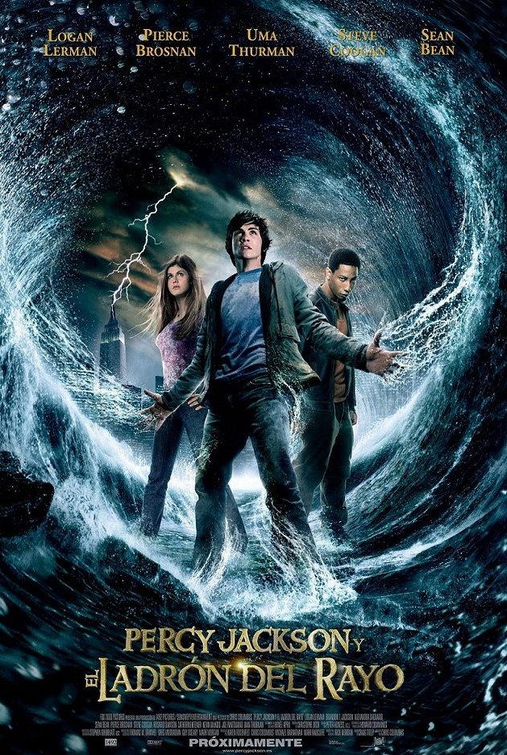
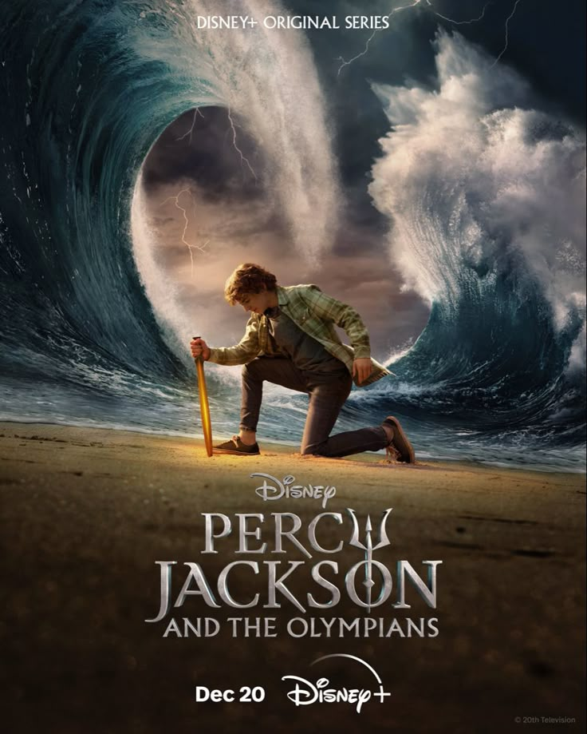

El universo de Percy Jackson ha llegado también a la pantalla, con adaptaciones que han generado muchas opiniones entre los fans. Aquí te contamos lo más importante.
La primera película de Percy Jackson se titula "Percy Jackson y el ladrón del rayo" y se estrenó en 2010. Está basada en el primer libro de la saga. Aunque la película presentó efectos especiales llamativos y un elenco joven, recibió críticas mixtas, especialmente por parte de los fans del libro, ya que se tomaron muchas libertades respecto a la historia original. A pesar de eso, ayudó a popularizar aún más el universo de Percy Jackson y atrajo a nuevos lectores a la saga. Una de las principales quejas fue que se alejaba mucho del material original: cambiaron edades de los personajes, omitieron escenas importantes y alteraron elementos clave de la trama. Esto decepcionó a muchos lectores que esperaban una adaptación más fiel.
La segunda película se titula "Percy Jackson y el mar de los monstruos" y se estrenó en 2013. Está basada en el segundo libro de la saga. Aunque esta película intentó corregir algunos errores de la primera, las críticas continuaron siendo mixtas o negativas. Muchos fans agradecieron que se respetaran más elementos del libro, pero aun así hubo cambios importantes en la historia, los personajes y el desarrollo de la trama. Algunos sintieron que la historia fue contada con prisa y que no capturaba la profundidad del libro. Desde el punto de vista comercial, la película no tuvo el éxito esperado en taquilla, y eso llevó a que la saga cinematográfica fuera cancelada, dejando sin adaptación los siguientes libros.
Tras el fracaso crítico y comercial de las dos películas, muchos fans quedaron decepcionados por las numerosas diferencias con los libros de Rick Riordan. Sin embargo, años después, los seguidores de la saga recibieron una buena noticia: Disney+ anunció una nueva serie basada en los libros, con el apoyo directo de Rick Riordan como productor ejecutivo y co-guionista. Esta serie, titulada "Percy Jackson and the Olympians", busca ser una adaptación fiel a la obra original, comenzando desde el primer libro: El ladrón del rayo.
La serie se estrenó en Disney+ el 20 de diciembre de 2023. Rick Riordan, esta vez participó activamente como productor ejecutivo y guionista, algo que no ocurrió con las películas. La primera temporada adapta el libro El ladrón del rayo. La serie fue muy bien recibida por los fans y la crítica, destacando su fidelidad a los libros, el casting adecuado para la edad de los personajes, los efectos visuales y el desarrollo de la historia. El actor Walker Scobell interpreta a Percy, acompañado por Leah Sava Jeffries como Annabeth y Aryan Simhadri como Grover. Gracias a su éxito, Disney+ confirmó una segunda temporada, que adaptará el segundo libro: El mar de los monstruos. Si deseas visualizar el trailer de la primera temporada, te invito a darle click a la siguiente imagen.
